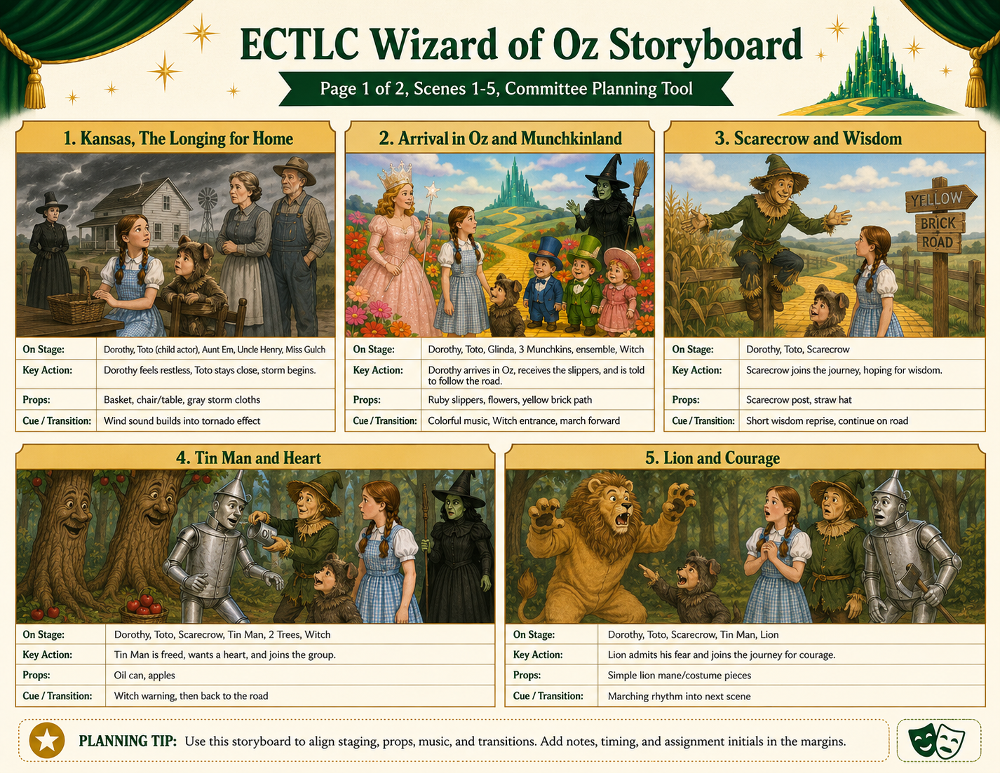
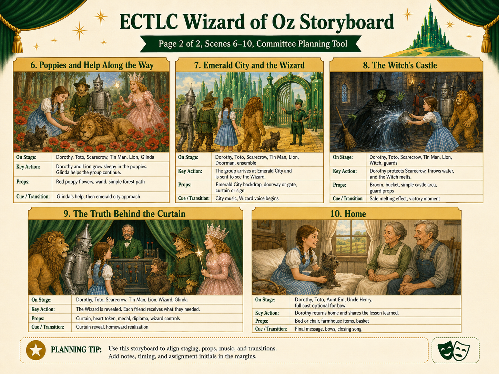

Revised Interactive Script
ECTLC-adapted script with scene navigation, role filters, search, print controls, and role-specific copies.
Open Revised ScriptProduction hub for the revised script, storyboard pages, and committee planning materials.
This page is a simple GitHub Pages site. Upload these files to a GitHub repository, enable Pages from the repository settings, and this hub becomes the public link for the committee and participants.
Last packaged: June 29, 2026 at 03:22 AM
ECTLC-adapted script with scene navigation, role filters, search, print controls, and role-specific copies.
Open Revised ScriptScenes 1 to 5: Kansas, Munchkinland, Scarecrow, Tin Man, and Lion.

Open Page 1Scenes 6 to 10: Poppies, Emerald City, Witch's Castle, Wizard reveal, and Home.

Open Page 2Committee planning structure, house meeting announcement framework, and decision checklist.
Open Planning DocumentRecommended meeting flow: confirm performance date, approve the shortened production format, assign scene leads, assign props and costumes, finalize rehearsal schedule, and decide who maintains this site.
Read Setup Notes